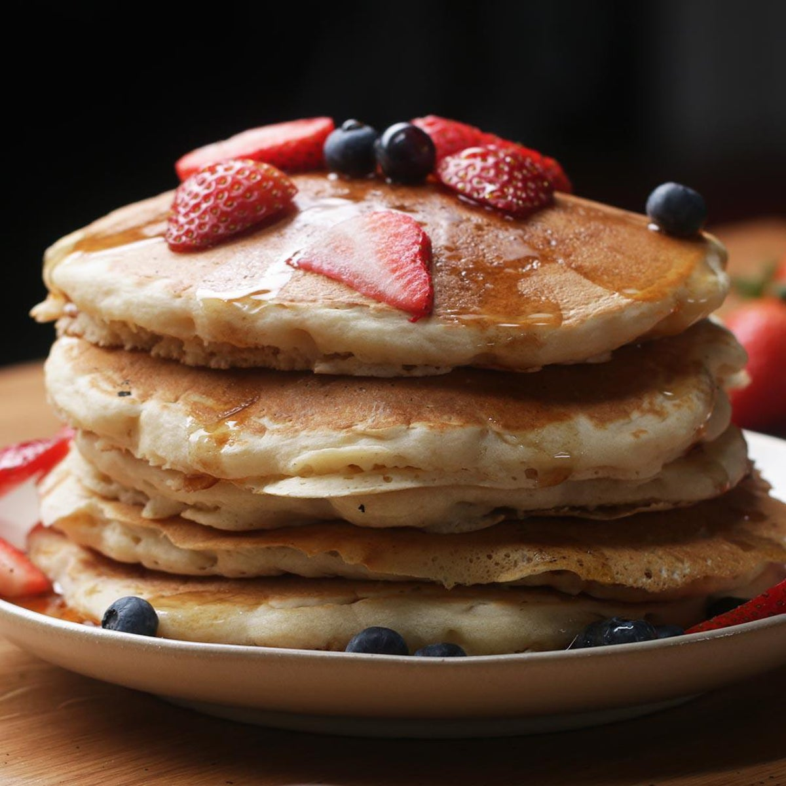

Vegan Pancakes

Ingredients
- 1 Cup Flour
- 2 Tablespoons Organic Sugar
- 1 Tablespoon Baking Powder
- 1/2 Teaspoon Salt
- 1 Cup Non-Dairy Milk
- 1 Tablespoon Apple Cider Vinegar
- 1 Teaspoon Vanilla
- Maple Syrup To Serve
Steps
- In a medium bowl, add the flour, sugar, baking powder, and salt, and stir to combine.
- In a medium bowl or liquid measuring cup, add almond milk, apple cider vinegar, and vanilla, and stir to combine
- Pour the liquid mixture into the dry mixture and whisk until smooth.
- Let batter rest for 5 minutes.
- Pour about ½ cup (65 grams) of batter onto a nonstick pan or griddle over medium heat.
- When the top begins to bubble, flip the pancake and cook until golden.
- Serve warm with maple syrup.
- Enjoy!